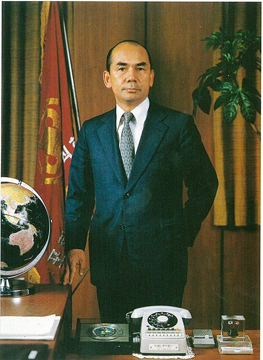
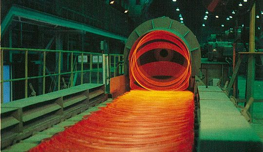
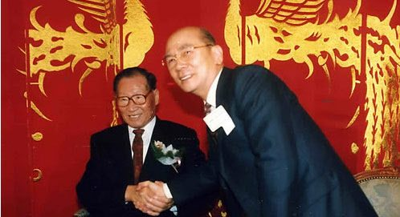

보도일 2015-03-13출처 조선일보 프리미엄조선 연재
1978년, 무오년(戊午年) 새해가 밝았다. 포스코 창업 10주년의 해. 박태준은 신년사에서 자신감 넘치는 새 비전을 제시했다.
“10년 전 오직 젊음과 정열, 사명감만으로 뭉쳐 우리나라 철강공업의 밑거름이 되기로 다짐한 이래 오늘에 이르기까지가 ‘개척과 시련’의 시기였다면, 금년을 기점으로 한 앞으로는 ‘성장과 안정’을 향하여 우리가 구축해온 성과를 다듬고 앞으로의 기반을 다져나가야 할 때라고 하겠습니다.”

‘성장과 안정’으로 나가려는 첫해에 포스코는 ‘포항 3기 설비 조기준공, 포항 4기 설비 조기착공’이란 과제를 짊어져야 했다. 그런데 박태준은 정초부터 전혀 뜻밖의 소식을 들었다. 서울에서 신년 하례를 마치고 나오는 걸음에 잘 아는 언론인이 야릇한 귀띔을 해줬다.
“현대가 제2제철소를 먹으려고 합니다. 상당히 진척됐어요. 경제수석 등 청와대 비서실이 적극적으로 현대를 민다고 합니다.”
박태준은 의아한 표정부터 지었다. 설마, 하고 미심쩍어하는 가운데 억울한 느낌이 한 줄기 냉랭한 바람처럼 스쳐 지나갔다. 사정이 그럴 만했다.
4년 전, 그러니까 1974년에 정부가 주도해서 민간기업 형태로 ‘한국제철주식회사’를 설립한 적이 있었다. 제2제철소 건설을 위한 회사였고, 초대 사장은 경제부총리 출신의 태완선이었다. 그러나 ‘한국제철’은 일 년을 넘기지 못하여 난관에 봉착했다. 설상가상의 형국으로 짓눌려 버렸다. 외국 자본을 끌어오지 못하는 것, 파트너인 미국 유에스스틸이 무리한 조건을 양보하지 않는 것.
유에스스틸은 ‘투자수익률 20% 보장’을 요구할 뿐만 아니라 ‘한국제철’ 건설 계획과 중복되는 포스코의 ‘포철 3기 공사 계획’을 1980년까지 연기해야 한다는 조건까지 덧붙였다.
‘한국제철’을 어떻게 처리할 것인가? 회사를 청산할 때 자본금 손실은 누가 해결할 것인가? 이것은 정부가 결정할 일이었지만 아무리 둘러봐야 합당한 자격을 갖춘 기업은 포스코밖에 없었다. 1975년 새해 벽두에 박정희의 경제팀 관료들이 포스코의 ‘한국제철’ 흡수를 결정할 것이라는 소문이 무성했다. 그것이 결정된 때는 그해 3월이었다. 핵심 내용은 이런 것이었다.
<포항제철이 경영난에 봉착한 한국제철을 1975년 4월 15일까지 인수하는 조건으로 포항제철에게 ‘제2제철소’를 건설할 권리를 인정한다.>
그러니까 포스코는 1975년 4월 ‘한국제철’을 인수한 그때 이미 ‘제2제철소 건설 권리’를 획득해놓은 것이었다. 그런데 이제 와서 뜬금없이 경제관료들의 입맛대로 제2제철소 건설을 ‘정주영의 현대’에게 넘겨주려 한다니! 박태준은 뒤통수를 만져봐야 할 노릇이었다.

아니 땐 굴뚝에 연기가 나랴. 이 속담이 적중했다. 소문은 곧 명명백백한 사실로 드러났다. 그것도 불을 지핀 쪽에서 당당히 밝히는 방식이었다. 한국의 대표적인 대기업으로 성장한 현대그룹이 현대중공업을 중심으로 자본금 2억 달러의 ‘현대제철소’를 설립하겠다, 즉 제2제철소 실수요자가 되겠다고 공개적으로 선언했다. 박태준은 귀에 송곳이 닿는 것 같았다. 현대의 주장에 박힌 핵이 바로 그의 청력을 날카롭게 자극하는 송곳이었다. 현대는 ‘제2제철소의 민영화’를 제2제철소 실수요자가 될 수 있는 가장 요긴한 논리적 핵으로 삼고 있었다.
포스코는 정말 뒤통수를 얻어맞은 격이었으니 한 발 늦었으나 서둘러 대응책을 세워야 했다. 박태준은 첫 단계로 여론 경쟁을 상정했다. 회사의 홍보 역량을 대폭 강화해야 했다. 그는 포항으로 돌아온 즉시 홍보실무 책임자 이대공에게 긴박한 상황을 알려주고 대책 강구를 지시했다. 뒷날 포항공과대학 건설본부장, 포스코 부사장, 포스코교육재단 이사장을 역임하게 되는 이대공은 그때 박 사장의 지시를 받고 이렇게 건의했다.
“사장님, 일일이 대응하지 않는 것이 좋을 듯합니다. 석 달만 기다리면 회사 10주년입니다. 그날을 포철 홍보의 절정과 전기로 삼았으면 합니다. 이후 상황이 달라지도록 최선의 노력을 다하겠습니다. 곧 홍보계획과 행사계획 보고서를 올리겠습니다.”
박태준이 대뜸 재가했다.
“그래, 우리 회사도 그런 일을 할 때가 됐어.”
정주영의 현대와 제2제철소 쟁탈전이 벌어진 때에 딱 맞춰 찾아온 ‘포스코 창립 10주년’. 이대공, 윤석만 등 홍보 참모들은 절호의 기회를 최대한 살려야 했다. 창립 10주년을 ‘포스코 홍보의 전국화, 본격화, 적극화’의 계기로 삼고, 현대와의 일전에서 일차적으로 여론을 선점한다는 목표를 잡았다. 이제 포스코는 지역적, 방어적, 소극적 홍보 관행을 벗어던지기로 했다.
‘영일만의 기적’은 언론의 조명을 받을 만한 충분한 자격을 갖추었고, 바야흐로 항간에도 ‘이제는 자기 PR시대’라는 말이 새로운 문화 조류의 도래를 알리는 짤막한 선전구호처럼 번져나가고 있었다.
정주영 회장 일가가 소유한 말 그대로의 ‘사기업 재벌 현대’는 공기업 포스코에 비해 홍보력이 월등히 앞서 있었다. 하지만 포스코 홍보팀은 ‘10주년 홍보 계획서’란 굵은 책자를 만들어 사장의 결재를 받았다. 그에 따라 2월부터 서울의 유수 언론인을 포항으로 초청했다. 필설로만 ‘영일만의 기적’을 말해온 이들이 눈으로 직접 그것을 확인할 수 있는 기회였다. 포스코도 까다로운 손님들을 상대할 자신감이 넘쳤다.
포스코가 3월 13일 상공부로 제2제철소를 짓겠다는 제안서를 보낸 데 이어 3월 21일 예비계획서까지 제출했다. 이튿날, 놀라운 일이 벌어졌다. 현대도 전격적으로 예비계획서를 제출했다. 우선 울산에 300만 톤 규모로 제철소를 짓고 최종 1000만 톤 규모의 제철소를 경북 영해에 짓겠다는 내용이었다.

재계 일각은 현대와 포스코의 제2제철소 쟁탈전을 ‘재벌 오너 정주영’과 ‘포철 사장 박태준’의 씨름이라며 흥미로운 관전에 들어갔다. 현대는 이미 막강한 지원부대를 갖추고 있었다. 중화학공업에 대해서는 청와대의 막강한 실세라고 알려진, 중화학공업기획단장을 겸하는 대통령비서실 경제2수석 오원철. 누구보다도 그가 정연한 논리를 갖추어 현대를 밀고 있었다. 마침 박정희가 박태준을 찾는 일도 뜸했다. 유신체제의 종반기에 접어든 대통령은 정치 방면이 너무 어수선하여 그 바깥에 있는 일꾼과 오붓하게 만나기가 어려운 모양이었다.